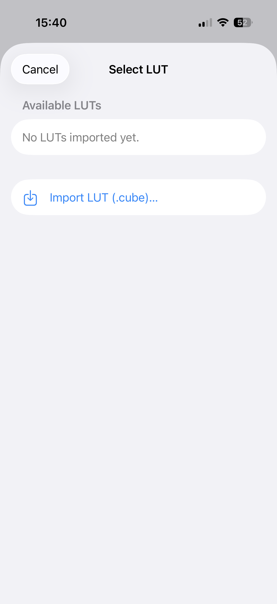

PhotoVideoBackup — 사용 설명서
사진과 비디오를 외장 SSD, SD 카드 또는 NAS에 백업하세요 — iPhone에서도 Android 휴대폰에서도.
PhotoVideoBackup 2.8 가이드 — iPhone(iOS 16 이상) 및 Android(9 이상)
1 PhotoVideoBackup이란?
PhotoVideoBackup은 휴대폰의 사진과 비디오 또는 카메라 메모리 카드의 내용을 휴대용 SSD, USB 드라이브 또는 NAS로 복사합니다. 미디어는 온라인 서비스를 거치지 않습니다. 앱에는 서버도 계정도 없습니다.
- 휴대폰 저장 공간이 가득 차서 안전하게 공간을 확보하고 싶을 때.
- 여행에서 돌아와 영상(DJI, GoPro, Insta360, Blackmagic…)이 가득한 SD 카드를 한 번에 안전하게 보관하고 싶을 때.
- iCloud나 Google 포토에 의존하지 않는 나만의 사본을 갖고 싶을 때.
무엇이 안전을 보장하나요? 복사된 모든 파일은 다시 읽혀 수학적 지문(SHA-256)으로 검증됩니다. 1바이트라도 다르면 앱이 알려 주므로, 모르는 사이 손상된 백업이 만들어지는 일이 없습니다.
앱은 복사만 합니다. 백업 후 사용자가 명시적으로 요청하지 않는 한 소스에서 아무것도 이동하거나 삭제하지 않습니다(‘기록과 보고서’ 참조).
2 무료와 Pro
PhotoVideoBackup은 무료로 다운로드할 수 있습니다. Pro를 한 번 구매하면(일회성 결제, 구독 없음) 고급 기능이 잠금 해제됩니다:
| 기능 | 무료 | Pro |
|---|---|---|
| 사진 보관함을 드라이브 또는 폴더 하나에 백업 | ✓ | ✓ |
| 여러 백업 — 각각 고유한 드라이브, NAS 및 설정 | — | ✓ |
| 백업 탐색 및 미리 보기(LUT 미리 보기 포함) | ✓ | ✓ |
| 카메라 카드와 USB 드라이브 백업(SD, DJI, GoPro, Insta360…) | — | ✓ |
| 두 번째 드라이브로 미러링 | — | ✓ |
| Wi-Fi로 NAS에 백업 | — | ✓ |
| WebDAV 서버(Nextcloud, pCloud 등)로 백업 | — | ✓ |
| LOG 비디오를 LUT로 색보정(H.265 내보내기) | — | ✓ |


3 필요한 것
| iPhone / iPad | Android | |
|---|---|---|
| 기기 | USB-C 포트가 있는 iPhone(iPhone 15 이상), iOS 16 이상 | Android 휴대폰 또는 태블릿, Android 9 이상 |
| 드라이브 | USB-C SSD 아무거나(Samsung T7, SanDisk Extreme, WD My Passport…) | USB-C SSD 또는 USB 드라이브, 또는 휴대폰 안의 폴더 |
| 허브 또는 리더기(선택) | SSD와 카드 리더기를 함께 연결할 수 있는 작은 USB-C 허브 | USB-C 카드 리더기 또는 OTG 허브 |
긴 백업, 드라이브 두 개. 휴대폰의 USB-C 포트는 하나뿐이고, 버스 전원 SSD는 여기서 전력을 가져갑니다. Power Delivery 패스스루를 지원하는 USB-C 허브를 쓰면 드라이브 두 개와 보조 배터리(또는 충전기)를 동시에 연결할 수 있습니다. 보조 배터리가 허브에 전원을 공급하고, 허브가 SSD에 전원을 공급하며 휴대폰을 충전하므로 배터리를 소모하지 않고 몇 시간이고 백업할 수 있습니다.

4 처음 실행과 권한
환영 화면이 앱과 다섯 가지 대표 구성(단순한 휴대폰 → SSD부터 VPN으로 연결한 NAS까지)을 소개합니다. 시작하기를 탭하세요.

- iPhone / iPad: 사진 보관함에 대한 전체 접근을 허용하세요. 허용하지 않으면 앱이 사진을 읽을 수 없습니다.
- Android: 사진과 비디오에 대한 접근을 허용하세요. 사진의 위치 정보에 대한 접근도 허용하세요. 그렇지 않으면 Android가 넘겨주는 파일에서 GPS 데이터를 제거하여 백업이 원본과 달라집니다. 백업이 끝나면 알림을 받도록 알림도 허용하세요.
5 기기 이름과 대상 설정하기
- 설정 탭을 엽니다. 기기 섹션에서 폴더 이름을 입력합니다. 예: Anna의 iPhone 또는 Pixel 8. 이 이름이 드라이브의 폴더 이름이 되므로, 같은 드라이브에 저장하는 두 휴대폰이 서로 섞이지 않습니다. 이름을 설정하기 전에는 백업이 시작되지 않습니다.
- 드라이브를 연결합니다.
- iPhone / iPad / Android: 백업 탭을 열고 새 백업(또는 +)을 탭해 사진 보관함 / 갤러리를 선택한 다음, 대상 추가 → 폴더…를 탭하고 파일 브라우저에서 드라이브나 그 안의 폴더를 고릅니다. 백업에 이름을 지정하고 만들기를 탭합니다.
- 드라이브 이름이 백업 카드에 여유 공간과 함께 표시됩니다. 한 번만 하면 됩니다. 다음에는 앱이 드라이브를 알아봅니다.


6 사진과 비디오 백업하기
백업 탭을 엽니다. 각 백업은 이름, 복사 원본과 대상, 드라이브의 여유 공간을 보여 주는 카드입니다. 실행을 탭하세요. Pro에서는 여러 백업을 만들 수 있으며(예: 드라이브용과 NAS용) 각각 고유한 설정을 가집니다. 카드를 길게 누르거나(iPhone) ⋮ 메뉴를 탭한(Android) 다음 설정을 선택하세요. 픽토그램의 작은 배지는 데이터가 이동하는 방식을 보여 줍니다. 로컬 드라이브는 케이블, NAS나 클라우드 폴더는 휴대폰이 연결된 네트워크에 따라 Wi-Fi 또는 모바일 데이터(SIM / eSIM)입니다. 대상은 폴더(드라이브, 카드 또는 파일 앱의 모든 폴더, iCloud Drive와 Google Drive 포함)이거나 주소와 계정으로 연결하는 서버(NAS, Nextcloud, pCloud 등)입니다. 한 백업에 둘 다 여러 개 둘 수 있습니다.
백업을 시작하기 전에 백업을 시작할까요? 화면에서 곧 일어날 일을 보여 줍니다. 원본과 각 대상이 종류를 나타내는 픽토그램(드라이브, NAS, 클라우드 폴더, 또는 휴대폰 자체 — 주황색으로 경고와 함께)과 함께 표시됩니다. 백업에 전원 연결이 필요하면 휴대폰이 충전 중인지도 표시됩니다. 확인한 다음 백업 시작을 탭하거나 X를 탭해 취소하세요.


앱은 보관함을 스캔한 다음 복사합니다. 첫 백업이 가장 오래 걸리며, 다음부터는 새로운 것만 복사하므로 훨씬 빠릅니다.
- iCloud / Google 포토에만 있는 사진은 먼저 다운로드됩니다. 이때는 연결과 약간의 시간이 필요합니다.
- 앱은 각 파일을 대상으로 바로 복사하므로 휴대폰이 거의 가득 차 있어도 작동합니다.
- 앱을 떠나도 됩니다. 백업이 끝나면 알림으로 알려 드립니다.
7 카메라 카드 백업하기(Pro)
- 카드 리더기를 휴대폰에 연결하고 카드를 넣습니다(SSD도 계속 연결해야 하면 허브를 사용하세요).
- iPhone / iPad / Android: 백업 탭에서 +를 탭해 카메라 또는 SD 카드를 선택하고, 소스 추가…로 파일 브라우저에서 카드를 고릅니다. 대상 추가로 대상을 추가합니다. 드라이브에는 폴더…, NAS나 다른 서버에는 서버를 사용합니다.
- 대상을 선택하고 이름을 지정하세요 — Blackmagic, 일본 여행… 기기 유형은 자동으로 인식됩니다.
- 실행을 탭합니다.
| 인식되는 기기 | 백업되는 항목 |
|---|---|
| DJI Mini 3 Pro | 사진, 비디오, DNG, 텔레메트리(.srt) |
| DJI 360 / Action(Neo 2…) | 비디오, 사진, DNG, 오디오, 텔레메트리(.srt) |
| Insta360(X5…) | .insv, .insp, .lrv 파일 |
| GoPro HERO | 비디오와 사진. 프록시(.lrv) 및 썸네일(.thm) 파일은 건너뜁니다 |
| 그 외 | 일반적인 사진, 비디오, RAW 형식 |
소스를 제거하려면 그것을 사용하는 백업을 삭제하세요(다른 백업이 사용하지 않으면 카드도 함께 잊혀집니다). 파일은 삭제되지 않습니다.
8 백업 진행 중
백업을 탭하는 즉시 백업 진행 중 패널이 나타납니다. 먼저 준비 중…(대상에 연결), 그다음 소스 분석 중…과 함께 찾은 파일 수가 실시간으로 표시됩니다. 큰 보관함에서는 시간이 걸릴 수 있으며, 멈춘 것이 아닙니다.

| 단계 | 앱이 하는 일 |
|---|---|
| 스캔 | 파일 수를 세고 복사해야 할 파일을 확인합니다. |
| 복사 | 파일을 대상에 기록합니다. |
| 검증 | 사본을 다시 읽어 원본과 비교합니다. |
| 건너뜀 | 파일이 이미 백업되어 있어 할 일이 없습니다. |
중지 버튼으로 언제든 백업을 깔끔하게 끝낼 수 있습니다. 설정 → 백업에는 세션당 최대 파일 수 제한도 있으며, 비워 두면 무제한입니다.
9 백업이 끝나면

| 수 | 의미 |
|---|---|
| 복사됨 | 대상에 처음 저장된 파일. |
| 건너뜀 | 이미 있던 파일 — 정상이며 안전합니다. |
| 실패 | 복사하지 못한 파일(드묾). |
실패는 손상된 카드, 가득 찬 드라이브, 끊어진 연결, 또는 여유 공간보다 큰 단일 파일 때문에 발생합니다. 해당 파일만 보고되고 나머지는 계속됩니다. 공간을 확보하거나 다시 연결한 후 백업을 다시 실행하면 누락된 파일이 처리됩니다.
10 기록과 보고서
기록 탭에는 모든 백업이 나열됩니다: 소스, 대상, 폴더 구조, 파일 수, 그리고 색상 — 성공은 녹색, 일부는 주황색, 실패는 빨간색.

일부는 백업이 일찍 멈췄다는 뜻이며, 보고서에 네 가지 이유 중 하나가 표시됩니다: 중지를 탭했거나, 파일 수 제한에 도달했거나, 대상 연결이 끊겼거나, iPhone 저장 공간이 부족했습니다(파일은 안전합니다 — 공간을 확보하세요). 드라이브를 다시 연결하거나 공간을 확보한 후 다시 실행하면 멈춘 곳에서 재개됩니다.
세션을 탭하면 보고서가 열립니다: 요약, SHA-256 상태, 복사됨·건너뜀·실패 파일 목록(실패마다 이유 포함). 대상이 두 개이면 보고서에 드라이브별로 따로 표시됩니다.

소스 파일 삭제…는 백업에 만족한 뒤 카드나 보관함의 공간을 확보합니다. 복사되고 검증까지 끝난 파일만 대상이 되며, 확인하려면 4자리 코드를 입력해야 합니다. 백업은 그대로입니다. iPhone과 Android 모두 사진에 대해 시스템이 한 번 더 확인합니다.

11 백업 탐색, 보기, 공유
탐색 탭은 앱 안에서 드라이브의 내용을 보여 줍니다: 기기마다 폴더 하나, 그다음 날짜 폴더, 그리고 썸네일 그리드. 사진을 탭하면 전체 화면으로 열리고(스와이프로 파일 이동, 핀치로 확대) 비디오를 탭하면 재생됩니다. 드라이브가 연결되어 있어야 합니다.


파일을 다른 곳으로 보내려면 선택을 탭하고 파일에 체크한 다음 공유를 탭하세요 — AirDrop, 메시지, 이메일, 다른 앱.

NAS에서는 탐색이 파일 목록을 보여 주고, 파일을 열 때만 하나씩 다운로드합니다. WebDAV 서버도 같은 방식으로 작동합니다.
12 폴더와 파일 이름
설정 → 백업의 폴더 구조에서 기기 폴더를 정리하는 방식을 정합니다: 단일 구조, 월별, 날짜별(기본값), 연 / 월별. 탐색 탭은 드라이브에 있는 구조에 맞춰 표시됩니다.
파일 이름 지정은 모든 파일에 처음 복사될 때 최종 이름을 부여합니다. 카메라 이름으로 저장된 뒤 이름이 바뀌는 일은 없습니다. 백업 중 파일 이름 변경을 켜고 패턴을 편집하세요. 토큰을 탭하면 삽입되며, 그 외는 모두 문자 그대로 처리됩니다. 예시 줄에 결과가 표시됩니다.

| 토큰 | 대체되는 값 |
|---|---|
| {YYYY} {MM} {DD} | 촬영 연도, 월, 일 |
| {hh} {mm} {ss} | 촬영 시, 분, 초(현지 시간) |
| {device} | 공백 없는 기기 폴더 이름 |
| {original} | 확장자를 제외한 원래 파일 이름 |
- 아무것도 덮어쓰지 않습니다. 이름이 다른 파일에 이미 사용 중이면 새 파일에
-1,-2… 접미사가 붙습니다. 함께 촬영한 두 장이 서로 다른 이름을 갖도록 패턴에 초를 포함하세요. - 중복은 그 이름으로 식별됩니다. 이미 백업된 파일은 그 뒤에 편집했더라도 건너뛰며, 이름이 같은 다른 파일은 따로 보관됩니다.
- 기존 파일은 이름이 바뀌지 않습니다. 이 프로필은 지금부터 복사되는 파일에 적용됩니다. 프로필을 끄면(기본값) 파일은 카메라 이름을 유지합니다.
미디어와 함께 복사할 추가 파일 확장자도 지정할 수 있습니다 — 예: GPS 로그인 gpx.
13 LUT 색보정: LOG 영상에 룩 입히기(Pro)
LOG로 촬영한 영상(DJI D-Log M, GoPro Protune…)은 LUT를 적용하기 전까지 평평하고 회색으로 보입니다. 탐색에서 기기 폴더에 LUT를 지정하면 앱을 떠나지 않고 미리 보고 색보정할 수 있습니다.
- 기기 폴더를 열고 LUT 색보정에서 LUT 지정…을 탭한 다음 LUT(.cube) 가져오기를 선택합니다. 표준
.cube파일이면 모두 사용할 수 있습니다(DaVinci Resolve, Final Cut Pro, 카메라 제조사 제공). - 해당 폴더의 비디오를 탭하면 LUT가 실시간으로 적용되어 재생됩니다. 이 미리 보기는 무료입니다.
- 영구 사본을 만들려면(Pro) 선택을 탭하고 비디오를 고른 다음 색보정을 탭하세요. 각 비디오는 LUT가 적용된 H.265로 다시 인코딩되어 기기명 (Graded)라는 형제 폴더에 저장됩니다.


- 색보정은 비디오별로 하며 ‘전체’는 없습니다. 한 폴더에 LOG와 일반 클립이 섞여 있는 경우가 많고, LOG용 LUT를 일반 클립에 적용하면 망가지기 때문입니다.
- 이미 색보정된 파일은 건너뛰므로 다시 실행해도 안전합니다. 언제든 취소할 수 있으며, 완료된 파일은 유지됩니다.
- 색보정은 부하가 큰 작업입니다. 앱을 열어 둔 채 드라이브를 연결한 상태로 유지하세요. 휴대폰이 뜨거워질 수 있습니다.
- NAS에서는 클립이 다운로드되어 휴대폰에서 색보정된 뒤 NAS의 기기명 (Graded) 폴더로 업로드됩니다. 더 느리고 데이터를 사용합니다.
14 두 대상에 동시에 백업(Pro)
두 번째 대상을 추가합니다 — 백업 카드를 길게 누르거나(iPhone) ⋮ 메뉴를 탭한(Android) 다음 설정과 대상 추가를 선택하세요. 모든 파일이 두 곳에 동시에 복사됩니다 — 드라이브 두 개, 또는 드라이브와 NAS. 백업 시간이 두 배가 되지는 않습니다. 한 대상이 실패하거나 사라져도 다른 쪽은 계속 진행되며, 보고서에 어느 쪽에 무엇이 빠졌는지 표시됩니다.
15 Wi-Fi로 NAS에 백업(Pro)
드라이브 대신 또는 드라이브와 함께, 네트워크를 통해 NAS(Synology, QNAP, TrueNAS 등 SMB를 지원하는 모든 기기)로 바로 백업할 수 있습니다. 케이블도 클라우드도 필요 없으며 각 파일은 SHA-256으로 검증됩니다.
- NAS에서 SMB 파일 공유를 켜고 공유 폴더에 대한 읽기·쓰기 권한을 사용자에게 부여합니다.
- 앱에서 — iPhone / iPad / Android: 백업을 만들고 대상 추가 → 서버 → NAS(Synology, QNAP 등)를 선택하거나, 기존 백업의 설정에서 NAS를 추가합니다.
- 호스트(예:
192.168.1.20), 공유(예:photo), 선택 사항인 폴더, 사용자 이름과 암호를 입력합니다. 암호는 iOS 키체인 또는 Android 키스토어에 저장됩니다. - 연결 테스트를 탭하세요: “연결됨 — 항목 N개를 찾았습니다.” 그런 다음 만들기(백업 설정에서는 저장)를 탭하세요.
이제 NAS가 백업 카드에 여유 공간과 함께 표시됩니다. 백업마다 고유한 NAS를 가지므로 여러 개를 사용할 수 있습니다. NAS에 연결할 수 있다면 집 밖에서도 백업할 수 있습니다. 가장 간단하고 안전한 방법은 Tailscale 같은 VPN으로, NAS와 휴대폰에 설치한 뒤 NAS의 100.x.x.x 주소를 호스트로 사용하는 것입니다.
16 Nextcloud, pCloud 또는 다른 WebDAV 서버로 백업(Pro)
드라이브나 NAS 외에도 백업을 WebDAV 서버로 보낼 수 있습니다. Nextcloud, ownCloud, pCloud, WebDAV를 켠 Synology나 QNAP, Hetzner Storage Box 등이 해당됩니다. 주소는 보안 https 주소이므로 VPN 없이 어디서든 사용할 수 있습니다. 각 파일은 NAS에서와 같이 SHA-256으로 검증됩니다.
- 서버의 WebDAV 주소를 확인합니다. Nextcloud:
https://내-서버/remote.php/dav/files/내-이름/. pCloud:https://ewebdav.pcloud.com/(유럽 계정) 또는https://webdav.pcloud.com/(미국). - 2단계 인증을 사용 중이면 서버의 보안 설정에서 앱 비밀번호를 만들어 비밀번호 대신 사용하세요.
- 앱에서: 백업을 만들고 대상 추가 → 서버 → Nextcloud, pCloud 또는 WebDAV 서버를 선택하거나, 기존 백업의 설정에서 추가합니다.
- 서버 주소, 선택 사항인 폴더(예:
Backups), 사용자 이름, 비밀번호를 입력합니다. 비밀번호는 iOS 키체인 또는 Android Keystore에 저장됩니다. - 연결 테스트를 탭한 다음 만들기(백업 설정에서는 저장)를 탭합니다.
자체 서명 인증서를 쓰는 내 서버. iOS가 서버의 인증서를 신뢰하지 않으면 테스트에서 알려 주고 인증서의 지문을 보여 줍니다. 서버에 표시되는 지문과 같은지 확인한 후 이 인증서 신뢰를 탭하세요. 그 뒤로는 바로 그 인증서만 허용됩니다(다른 인증서는 거부됩니다). 이 인증서 삭제로 제거할 수 있습니다.
큰 파일. Nextcloud와 ownCloud에서는 100 MB가 넘는 동영상을 나누어 보내며, 중단된 업로드는 멈춘 곳에서 이어집니다. 다른 서버는 파일마다 한 번의 요청으로 받습니다. 서버나 그 앞의 프록시가 업로드 크기를 제한하면 해당 파일은 “서버가 이 파일 크기를 거부했습니다. 업로드 한도를 확인하세요.”와 함께 실패로 보고됩니다. 서버의 한도를 올린 뒤 다시 실행하세요. pCloud도 WebDAV는 매우 큰 백업에 적합하지 않다고 안내합니다. 큰 동영상은 드라이브나 NAS를 권장합니다.
17 계정으로 pCloud에 백업(Pro)
비밀번호를 저장하지 않고 pCloud 계정으로 바로 백업할 수 있습니다. pCloud의 자체 페이지에서 로그인하며 앱은 접근 토큰만 보관합니다. 유럽 계정에서는 각 파일을 pCloud 쪽에서 SHA-256으로 검증하므로 다시 내려받지 않습니다. iPhone과 iPad에서 사용할 수 있으며 Android는 이후 지원됩니다.
- 앱에서: 백업을 만든 다음 대상 추가 → 서버 → pCloud를 선택합니다.
- pCloud로 로그인을 눌러 로그인하고 접근을 허용합니다. 로그인 창은 저절로 닫힙니다.
- 원하면 폴더를 입력하고 연결 테스트를 누른 뒤 만들기(백업 설정에서는 저장)를 누릅니다.
내 파일은 어디에 있나요? 앱은 pCloud 안의 전용 폴더만 볼 수 있으므로 백업은 계정의 루트가 아니라 Applications › PhotoVideoBackup에 있습니다. 이미 WebDAV로 pCloud에 백업하고 있다면 그 파일은 루트에 있어 인식되지 않습니다. 이 대상으로의 첫 백업은 모든 것을 다시 복사합니다. 같은 사진에는 둘 중 하나만 사용하세요.
18 Android와 iPhone: 차이점
두 앱은 같은 엔진을 공유합니다. 중복 감지, 이름 지정, SHA-256 검증, 인덱스가 모두 같아서 한쪽에서 시작한 백업을 다른 쪽에서도 인식합니다.
| iPhone / iPad | Android | |
|---|---|---|
| 보관함 소스 | 사진 보관함 | 갤러리(사진과 비디오) |
| 대상 | 파일 앱에서 선택한 폴더(SSD, iCloud Drive, SMB) | 시스템 선택기로 고른 폴더(SSD, USB, 휴대폰 저장소), NAS |
| 백그라운드 | 약 30초, 이후 백업 중에는 화면이 켜진 상태로 유지됩니다 | 포그라운드 알림이 실행을 유지하며 중지 버튼이 있습니다 |
| Pro | 앱 내 구입(App Store) | 일회성 구매(Google Play) |
| Mac | Apple 실리콘 Mac에서 실행(“iPad용으로 설계됨”) | — |
.nomedia 파일) 백업이 다시 백업되지 않습니다.

19 자주 묻는 질문
다시 실행하면 같은 파일을 두 번 복사하나요? 아니요. 각 파일은 대상에서 이름이 부여되고 다음 백업이 그 이름으로 찾습니다. 앱의 기록상 같은 원본에서 온 것이라면 이후에 편집했더라도 건너뜁니다. 이름이 같지만 실제로 다른 파일만 -1, -2… 접미사가 붙으며, 아무것도 덮어쓰지 않습니다.
앱은 백업한 내용을 어디에 기억하나요? 자체 데이터베이스와 각 대상 루트의 작은 숨김 파일 .pvb-index.json에 기억합니다. 이 사본은 백업과 함께 이동하므로 앱을 다시 설치하거나 다른 휴대폰에서도 앱이 이를 읽어 다시 복사하지 않습니다. 그대로 두어도 되며, 삭제해도 앱이 다시 만듭니다.
NAS와 드라이브에 함께 백업할 수 있나요? 네. 연결된 모든 대상이 동시에 백업을 받습니다.
NAS 연결 시간이 초과됩니다. NAS에 연결할 수 없는 경우가 대부분입니다. 같은 Wi-Fi에 있는지(또는 VPN이 켜져 있는지), SMB 공유가 켜져 있는지, NAS 방화벽이 연결을 허용하는지 확인하세요.
휴대폰 두 대로 같은 드라이브를 사용할 수 있나요? 네. 설정에서 각각 다른 폴더 이름을 지정하면 각 휴대폰이 드라이브에 자기 폴더를 만듭니다.
진행률이 3%에서 멈춘 것 같습니다. 처음 파일은 대용량 비디오인 경우가 많습니다. 몇 분 기다려 주세요.
카드가 “Documents”로 표시됩니다. 일부 카메라는 일반 폴더를 사용합니다. 소스를 추가할 때 알아보기 쉬운 이름을 입력하세요.
휴대폰이 거의 가득 차 있어도 백업할 수 있나요? 네. 파일이 대상으로 바로 스트리밍되므로 한 번에 몇 메가바이트만 보관됩니다. NAS만 대상으로 하는 백업만 한 번에 파일 하나만큼의 여유가 필요합니다. 정말로 들어가지 않는 파일은 실패로 보고되고 나머지는 계속됩니다.
내 데이터가 어딘가로 전송되나요? 아니요. 모든 것이 휴대폰과 드라이브 또는 NAS 사이에서만 이루어집니다. 앱에는 서버도 계정도 없습니다. 네트워크 트래픽은 직접 설정한 NAS와, 시스템이 하는 사용자 본인의 iCloud / Google 사진 다운로드뿐입니다. 직접 설정한 WebDAV 서버도 마찬가지입니다.
어떤 언어를 지원하나요? 영어, 프랑스어, 독일어, 스페인어(중립, 스페인·중남미용), 이탈리아어, 포르투갈어(유럽식), 중국어 간체, 중국어 번체, 러시아어, 일본어, 한국어, 힌디어, 아랍어를 지원합니다. 앱은 휴대폰 언어를 따르며, 설정 → 언어에서 재시작 없이 강제로 지정할 수 있습니다.
pCloud로 백업할 수 있나요? 네. 대상을 추가할 때 pCloud를 선택하고 pCloud 페이지에서 로그인하세요. 비밀번호는 저장되지 않으며 앱은 자신의 폴더(Applications › PhotoVideoBackup)만 볼 수 있습니다. WebDAV(https://ewebdav.pcloud.com/, 미국 계정은 https://webdav.pcloud.com/)도 사용할 수 있는데, 계정 루트에 기록하지만 큰 동영상에는 더 느립니다.
“서버가 이 파일 크기를 거부했습니다.” 서버 또는 그 앞의 프록시(nginx, Cloudflare 등)가 업로드 크기를 제한하고 있습니다. 한도를 올리거나(Nextcloud에서는 upload_max_filesize, post_max_size, 프록시의 요청 크기), 큰 동영상은 드라이브나 NAS로 백업하세요. Nextcloud와 ownCloud는 한도를 우회할 수 있는 분할 업로드도 지원합니다.